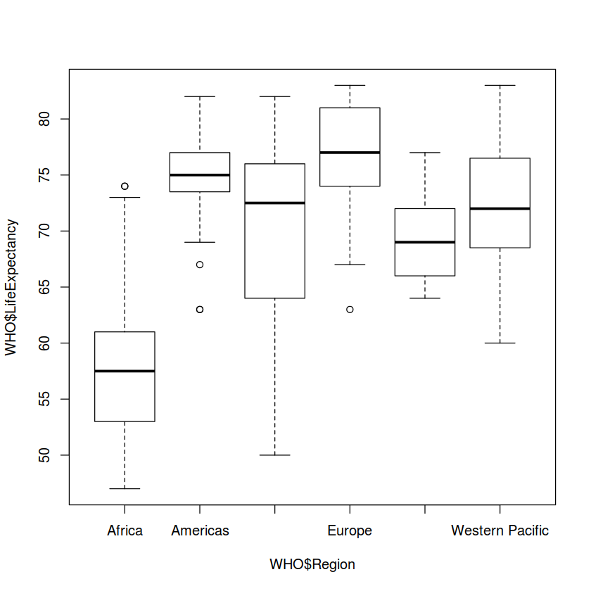
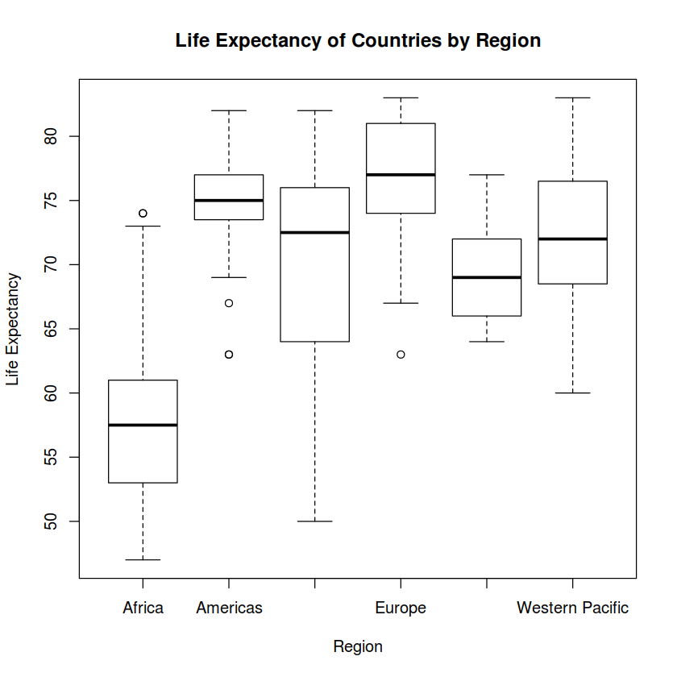

DataFrame¶
创建一个DataFrame
Country = c("Brazil", "China", "India", "Switzerland", "USA")
LifeExpectancy = c(74, 76, 65, 83, 79)
Data = data.frame(Country, LifeExpectancy)
Data
| Country | LifeExpectancy |
|---|---|
| <fct> | <dbl> |
| Brazil | 74 |
| China | 76 |
| India | 65 |
| Switzerland | 83 |
| USA | 79 |
给DataFrame增加列
Population = c(199000, 1390000, 1240000, 7997, 318000)
Data2 = cbind(Data, Population)
Data2
| Country | LifeExpectancy | Population |
|---|---|---|
| <fct> | <dbl> | <dbl> |
| Brazil | 74 | 199000 |
| China | 76 | 1390000 |
| India | 65 | 1240000 |
| Switzerland | 83 | 7997 |
| USA | 79 | 318000 |
给DataFrame增加行
Country = c("Australia", "Greece")
LifeExpectancy = c(82, 81)
Population = c(23050, 11125)
NewData = data.frame(Country, LifeExpectancy, Population)
NewData
| Country | LifeExpectancy | Population |
|---|---|---|
| <fct> | <dbl> | <dbl> |
| Australia | 82 | 23050 |
| Greece | 81 | 11125 |
Data3 = rbind(Data2, NewData)
Data3
| Country | LifeExpectancy | Population |
|---|---|---|
| <fct> | <dbl> | <dbl> |
| Brazil | 74 | 199000 |
| China | 76 | 1390000 |
| India | 65 | 1240000 |
| Switzerland | 83 | 7997 |
| USA | 79 | 318000 |
| Australia | 82 | 23050 |
| Greece | 81 | 11125 |
DataFrame获得数据概要¶
获取当前路径
getwd()
'/home/jerrywang/GitHub/note_viajupyterbook/mynote/content/R_study'
读取数据文件，这包含了世界卫生组织（WHO）在所有国家/地区的最新统计数据
WHO = read.csv("/home/jerrywang/GitHub/note_viajupyterbook/mynote/datas/WHO.csv")
WHO
| Country | Region | Population | Under15 | Over60 | FertilityRate | LifeExpectancy | ChildMortality | CellularSubscribers | LiteracyRate | GNI | PrimarySchoolEnrollmentMale | PrimarySchoolEnrollmentFemale |
|---|---|---|---|---|---|---|---|---|---|---|---|---|
| <fct> | <fct> | <int> | <dbl> | <dbl> | <dbl> | <int> | <dbl> | <dbl> | <dbl> | <dbl> | <dbl> | <dbl> |
| Afghanistan | Eastern Mediterranean | 29825 | 47.42 | 3.82 | 5.40 | 60 | 98.5 | 54.26 | NA | 1140 | NA | NA |
| Albania | Europe | 3162 | 21.33 | 14.93 | 1.75 | 74 | 16.7 | 96.39 | NA | 8820 | NA | NA |
| Algeria | Africa | 38482 | 27.42 | 7.17 | 2.83 | 73 | 20.0 | 98.99 | NA | 8310 | 98.2 | 96.4 |
| Andorra | Europe | 78 | 15.20 | 22.86 | NA | 82 | 3.2 | 75.49 | NA | NA | 78.4 | 79.4 |
| Angola | Africa | 20821 | 47.58 | 3.84 | 6.10 | 51 | 163.5 | 48.38 | 70.1 | 5230 | 93.1 | 78.2 |
| Antigua and Barbuda | Americas | 89 | 25.96 | 12.35 | 2.12 | 75 | 9.9 | 196.41 | 99.0 | 17900 | 91.1 | 84.5 |
| Argentina | Americas | 41087 | 24.42 | 14.97 | 2.20 | 76 | 14.2 | 134.92 | 97.8 | 17130 | NA | NA |
| Armenia | Europe | 2969 | 20.34 | 14.06 | 1.74 | 71 | 16.4 | 103.57 | 99.6 | 6100 | NA | NA |
| Australia | Western Pacific | 23050 | 18.95 | 19.46 | 1.89 | 82 | 4.9 | 108.34 | NA | 38110 | 96.9 | 97.5 |
| Austria | Europe | 8464 | 14.51 | 23.52 | 1.44 | 81 | 4.0 | 154.78 | NA | 42050 | NA | NA |
| Azerbaijan | Europe | 9309 | 22.25 | 8.24 | 1.96 | 71 | 35.2 | 108.75 | NA | 8960 | 85.3 | 84.1 |
| Bahamas | Americas | 372 | 21.62 | 11.24 | 1.90 | 75 | 16.9 | 86.06 | NA | NA | NA | NA |
| Bahrain | Eastern Mediterranean | 1318 | 20.16 | 3.38 | 2.12 | 79 | 9.6 | 127.96 | 91.9 | NA | NA | NA |
| Bangladesh | South-East Asia | 155000 | 30.57 | 6.89 | 2.24 | 70 | 40.9 | 56.06 | 56.8 | 1940 | NA | NA |
| Barbados | Americas | 283 | 18.99 | 15.78 | 1.84 | 78 | 18.4 | 127.01 | NA | NA | NA | NA |
| Belarus | Europe | 9405 | 15.10 | 19.31 | 1.47 | 71 | 5.2 | 111.88 | NA | 14460 | NA | NA |
| Belgium | Europe | 11060 | 16.88 | 23.81 | 1.85 | 80 | 4.2 | 116.61 | NA | 39190 | 98.9 | 99.2 |
| Belize | Americas | 324 | 34.40 | 5.74 | 2.76 | 74 | 18.3 | 69.96 | NA | 6090 | NA | NA |
| Benin | Africa | 10051 | 42.95 | 4.54 | 5.01 | 57 | 89.5 | 85.33 | 42.4 | 1620 | NA | NA |
| Bhutan | South-East Asia | 742 | 28.53 | 6.90 | 2.32 | 67 | 44.6 | 65.58 | NA | 5570 | 88.3 | 91.5 |
| Bolivia (Plurinational State of) | Americas | 10496 | 35.23 | 7.28 | 3.31 | 67 | 41.4 | 82.82 | NA | 4890 | 91.2 | 91.5 |
| Bosnia and Herzegovina | Europe | 3834 | 16.35 | 20.52 | 1.26 | 76 | 6.7 | 84.52 | 97.9 | 9190 | 86.5 | 88.4 |
| Botswana | Africa | 2004 | 33.75 | 5.63 | 2.71 | 66 | 53.3 | 142.82 | 84.5 | 14550 | NA | NA |
| Brazil | Americas | 199000 | 24.56 | 10.81 | 1.82 | 74 | 14.4 | 124.26 | NA | 11420 | NA | NA |
| Brunei Darussalam | Western Pacific | 412 | 25.75 | 7.03 | 2.03 | 77 | 8.0 | 109.17 | 95.2 | NA | NA | NA |
| Bulgaria | Europe | 7278 | 13.53 | 26.11 | 1.51 | 74 | 12.1 | 140.68 | NA | 14160 | 99.3 | 99.7 |
| Burkina Faso | Africa | 16460 | 45.66 | 3.88 | 5.78 | 56 | 102.4 | 45.27 | NA | 1300 | 60.7 | 55.9 |
| Burundi | Africa | 9850 | 44.20 | 3.87 | 6.21 | 53 | 104.3 | 22.33 | 67.2 | 610 | NA | NA |
| Cambodia | Western Pacific | 14865 | 31.23 | 7.67 | 2.93 | 65 | 39.7 | 96.17 | NA | 2230 | 96.4 | 95.4 |
| Cameroon | Africa | 21700 | 43.08 | 4.89 | 4.94 | 53 | 94.9 | 52.35 | NA | 2330 | 99.6 | 87.4 |
| ⋮ | ⋮ | ⋮ | ⋮ | ⋮ | ⋮ | ⋮ | ⋮ | ⋮ | ⋮ | ⋮ | ⋮ | ⋮ |
| Suriname | Americas | 535 | 27.83 | 9.55 | 2.32 | 72 | 20.8 | 178.88 | 94.7 | NA | NA | NA |
| Swaziland | Africa | 1231 | 38.05 | 5.34 | 3.48 | 50 | 79.7 | 63.70 | 87.4 | 5930 | NA | NA |
| Sweden | Europe | 9511 | 16.71 | 25.32 | 1.93 | 82 | 2.9 | 118.57 | NA | 42200 | 99.7 | 99.0 |
| Switzerland | Europe | 7997 | 14.79 | 23.25 | 1.51 | 83 | 4.3 | 131.43 | NA | 52570 | 98.9 | 99.5 |
| Syrian Arab Republic | Eastern Mediterranean | 21890 | 35.35 | 6.09 | 3.04 | 75 | 15.1 | 63.17 | 83.4 | NA | NA | NA |
| Tajikistan | Europe | 8009 | 35.75 | 4.80 | 3.81 | 68 | 58.3 | 90.64 | 99.7 | 2300 | 99.5 | 96.0 |
| Thailand | South-East Asia | 66785 | 18.47 | 13.96 | 1.43 | 74 | 13.2 | 111.63 | NA | 8360 | NA | NA |
| The former Yugoslav Republic of Macedonia | Europe | 2106 | 16.89 | 17.56 | 1.44 | 75 | 7.4 | 107.24 | 97.3 | 11090 | 97.3 | 99.2 |
| Timor-Leste | South-East Asia | 1114 | 46.33 | 5.16 | 6.11 | 64 | 56.7 | 53.23 | 58.3 | NA | 86.2 | 85.6 |
| Togo | Africa | 6643 | 41.89 | 4.44 | 4.75 | 56 | 95.5 | 50.45 | NA | 1040 | NA | NA |
| Tonga | Western Pacific | 105 | 37.33 | 7.96 | 3.86 | 72 | 12.8 | 52.63 | NA | 5000 | NA | NA |
| Trinidad and Tobago | Americas | 1337 | 20.73 | 13.18 | 1.80 | 71 | 20.7 | 135.64 | 98.8 | NA | 97.7 | 97.0 |
| Tunisia | Eastern Mediterranean | 10875 | 23.22 | 10.49 | 2.04 | 76 | 16.1 | 116.93 | NA | 9030 | NA | NA |
| Turkey | Europe | 73997 | 26.00 | 10.56 | 2.08 | 76 | 14.2 | 88.70 | NA | 16940 | 99.5 | 98.3 |
| Turkmenistan | Europe | 5173 | 28.65 | 6.30 | 2.38 | 63 | 52.8 | 68.77 | 99.6 | 8690 | NA | NA |
| Tuvalu | Western Pacific | 10 | 30.61 | 9.07 | NA | 64 | 29.7 | 21.63 | NA | NA | NA | NA |
| Uganda | Africa | 36346 | 48.54 | 3.72 | 6.06 | 56 | 68.9 | 48.38 | 73.2 | 1310 | 89.7 | 92.3 |
| Ukraine | Europe | 45530 | 14.18 | 20.76 | 1.45 | 71 | 10.7 | 122.98 | 99.7 | 7040 | 90.8 | 91.5 |
| United Arab Emirates | Eastern Mediterranean | 9206 | 14.41 | 0.81 | 1.84 | 76 | 8.4 | 148.62 | NA | 47890 | NA | NA |
| United Kingdom | Europe | 62783 | 17.54 | 23.06 | 1.90 | 80 | 4.8 | 130.75 | NA | 36010 | 99.8 | 99.6 |
| United Republic of Tanzania | Africa | 47783 | 44.85 | 4.89 | 5.36 | 59 | 54.0 | 55.53 | 73.2 | 1500 | NA | NA |
| United States of America | Americas | 318000 | 19.63 | 19.31 | 2.00 | 79 | 7.1 | 92.72 | NA | 48820 | 95.4 | 96.1 |
| Uruguay | Americas | 3395 | 22.05 | 18.59 | 2.07 | 77 | 7.2 | 140.75 | 98.1 | 14640 | NA | NA |
| Uzbekistan | Europe | 28541 | 28.90 | 6.38 | 2.38 | 68 | 39.6 | 91.65 | 99.4 | 3420 | 93.3 | 91.0 |
| Vanuatu | Western Pacific | 247 | 37.37 | 6.02 | 3.46 | 72 | 17.9 | 55.76 | 82.6 | 4330 | NA | NA |
| Venezuela (Bolivarian Republic of) | Americas | 29955 | 28.84 | 9.17 | 2.44 | 75 | 15.3 | 97.78 | NA | 12430 | 94.7 | 95.1 |
| Viet Nam | Western Pacific | 90796 | 22.87 | 9.32 | 1.79 | 75 | 23.0 | 143.39 | 93.2 | 3250 | NA | NA |
| Yemen | Eastern Mediterranean | 23852 | 40.72 | 4.54 | 4.35 | 64 | 60.0 | 47.05 | 63.9 | 2170 | 85.5 | 70.5 |
| Zambia | Africa | 14075 | 46.73 | 3.95 | 5.77 | 55 | 88.5 | 60.59 | 71.2 | 1490 | 91.4 | 93.9 |
| Zimbabwe | Africa | 13724 | 40.24 | 5.68 | 3.64 | 54 | 89.8 | 72.13 | 92.2 | NA | NA | NA |
数据结构¶
str()函数向我们展示了数据的结构
str(WHO)
'data.frame': 194 obs. of 13 variables:
$ Country : Factor w/ 194 levels "Afghanistan",..: 1 2 3 4 5 6 7 8 9 10 ...
$ Region : Factor w/ 6 levels "Africa","Americas",..: 3 4 1 4 1 2 2 4 6 4 ...
$ Population : int 29825 3162 38482 78 20821 89 41087 2969 23050 8464 ...
$ Under15 : num 47.4 21.3 27.4 15.2 47.6 ...
$ Over60 : num 3.82 14.93 7.17 22.86 3.84 ...
$ FertilityRate : num 5.4 1.75 2.83 NA 6.1 2.12 2.2 1.74 1.89 1.44 ...
$ LifeExpectancy : int 60 74 73 82 51 75 76 71 82 81 ...
$ ChildMortality : num 98.5 16.7 20 3.2 163.5 ...
$ CellularSubscribers : num 54.3 96.4 99 75.5 48.4 ...
$ LiteracyRate : num NA NA NA NA 70.1 99 97.8 99.6 NA NA ...
$ GNI : num 1140 8820 8310 NA 5230 ...
$ PrimarySchoolEnrollmentMale : num NA NA 98.2 78.4 93.1 91.1 NA NA 96.9 NA ...
$ PrimarySchoolEnrollmentFemale: num NA NA 96.4 79.4 78.2 84.5 NA NA 97.5 NA ...
可以看出，这是一个包含194个观测值和13个变量的DataFrame，变量名显示在左列，右边显示的是相应变量的类型，包括Factor、num、int。Factor应该是类型变量，显示了包含的类型的个数。num应该为一般的数字，int为整数
summary()函数显示DataFrame的摘要。包括最小最大值，均值，第一、第二、第三个四分位数。
summary(WHO)
Country Region Population
Afghanistan : 1 Africa :46 Min. : 1
Albania : 1 Americas :35 1st Qu.: 1696
Algeria : 1 Eastern Mediterranean:22 Median : 7790
Andorra : 1 Europe :53 Mean : 36360
Angola : 1 South-East Asia :11 3rd Qu.: 24535
Antigua and Barbuda: 1 Western Pacific :27 Max. :1390000
(Other) :188
Under15 Over60 FertilityRate LifeExpectancy
Min. :13.12 Min. : 0.81 Min. :1.260 Min. :47.00
1st Qu.:18.72 1st Qu.: 5.20 1st Qu.:1.835 1st Qu.:64.00
Median :28.65 Median : 8.53 Median :2.400 Median :72.50
Mean :28.73 Mean :11.16 Mean :2.941 Mean :70.01
3rd Qu.:37.75 3rd Qu.:16.69 3rd Qu.:3.905 3rd Qu.:76.00
Max. :49.99 Max. :31.92 Max. :7.580 Max. :83.00
NA's :11
ChildMortality CellularSubscribers LiteracyRate GNI
Min. : 2.200 Min. : 2.57 Min. :31.10 Min. : 340
1st Qu.: 8.425 1st Qu.: 63.57 1st Qu.:71.60 1st Qu.: 2335
Median : 18.600 Median : 97.75 Median :91.80 Median : 7870
Mean : 36.149 Mean : 93.64 Mean :83.71 Mean :13321
3rd Qu.: 55.975 3rd Qu.:120.81 3rd Qu.:97.85 3rd Qu.:17558
Max. :181.600 Max. :196.41 Max. :99.80 Max. :86440
NA's :10 NA's :91 NA's :32
PrimarySchoolEnrollmentMale PrimarySchoolEnrollmentFemale
Min. : 37.20 Min. : 32.50
1st Qu.: 87.70 1st Qu.: 87.30
Median : 94.70 Median : 95.10
Mean : 90.85 Mean : 89.63
3rd Qu.: 98.10 3rd Qu.: 97.90
Max. :100.00 Max. :100.00
NA's :93 NA's :93
选择DataFrame的子数据生成新的DataFrame
SEA = subset(WHO, Region == "South-East Asia")
str(SEA)
'data.frame': 11 obs. of 13 variables:
$ Country : Factor w/ 194 levels "Afghanistan",..: 14 20 47 78 79 104 117 120 163 171 ...
$ Region : Factor w/ 6 levels "Africa","Americas",..: 5 5 5 5 5 5 5 5 5 5 ...
$ Population : int 155000 742 24763 1240000 247000 338 52797 27474 21098 66785 ...
$ Under15 : num 30.6 28.5 22 29.4 29.3 ...
$ Over60 : num 6.89 6.9 12.74 8.1 7.86 ...
$ FertilityRate : num 2.24 2.32 2 2.53 2.4 2.31 1.98 2.5 2.35 1.43 ...
$ LifeExpectancy : int 70 67 69 65 69 77 65 68 75 74 ...
$ ChildMortality : num 40.9 44.6 28.8 56.3 31 10.5 52.3 41.6 9.6 13.2 ...
$ CellularSubscribers : num 56.06 65.58 4.09 72 103.09 ...
$ LiteracyRate : num 56.8 NA NA NA NA NA 92.3 60.3 91.2 NA ...
$ GNI : num 1940 5570 NA 3590 4500 7430 NA 1260 5520 8360 ...
$ PrimarySchoolEnrollmentMale : num NA 88.3 NA NA NA 96.5 NA NA 93.9 NA ...
$ PrimarySchoolEnrollmentFemale: num NA 91.5 NA NA NA 96.5 NA NA 94.4 NA ...
保存csv文件¶
write.csv(SEA, "/home/jerrywang/GitHub/note_viajupyterbook/mynote/datas/WHO_SEA.csv")
ls()
- 'Country'
- 'Data'
- 'Data2'
- 'Data3'
- 'LifeExpectancy'
- 'NewData'
- 'Population'
- 'SEA'
- 'WHO'
删除部分变量以释放内存
rm(SEA)
ls()
- 'Country'
- 'Data'
- 'Data2'
- 'Data3'
- 'LifeExpectancy'
- 'NewData'
- 'Population'
- 'WHO'
数据分析¶
访问DataFrame中的变量
WHO$Under15
- 47.42
- 21.33
- 27.42
- 15.2
- 47.58
- 25.96
- 24.42
- 20.34
- 18.95
- 14.51
- 22.25
- 21.62
- 20.16
- 30.57
- 18.99
- 15.1
- 16.88
- 34.4
- 42.95
- 28.53
- 35.23
- 16.35
- 33.75
- 24.56
- 25.75
- 13.53
- 45.66
- 44.2
- 31.23
- 43.08
- 16.37
- 30.17
- 40.07
- 48.52
- 21.38
- 17.95
- 28.03
- 42.17
- 42.37
- 30.61
- 23.94
- 41.48
- 14.98
- 16.58
- 17.16
- 14.56
- 21.98
- 45.11
- 17.66
- 33.72
- 25.96
- 30.53
- 30.29
- 31.25
- 30.62
- 38.95
- 43.1
- 15.69
- 43.29
- 28.88
- 16.42
- 18.26
- 38.49
- 45.9
- 17.62
- 13.17
- 38.59
- 14.6
- 26.96
- 40.8
- 42.46
- 41.55
- 36.77
- 35.35
- 35.72
- 14.62
- 20.71
- 29.43
- 29.27
- 23.68
- 40.51
- 21.54
- 27.53
- 14.04
- 27.78
- 13.12
- 34.13
- 25.46
- 42.37
- 30.1
- 24.9
- 30.21
- 35.61
- 14.57
- 21.64
- 36.75
- 43.06
- 29.45
- 15.13
- 17.46
- 42.72
- 45.44
- 26.65
- 29.03
- 47.14
- 14.98
- 30.1
- 40.22
- 20.17
- 29.02
- 35.81
- 18.26
- 27.05
- 19.01
- 27.85
- 45.38
- 25.28
- 36.59
- 30.1
- 35.58
- 17.21
- 20.26
- 33.37
- 49.99
- 44.23
- 30.61
- 18.64
- 24.19
- 34.31
- 30.1
- 28.65
- 38.37
- 32.78
- 29.18
- 34.53
- 14.91
- 14.92
- 13.28
- 15.25
- 16.52
- 15.05
- 15.45
- 43.56
- 25.96
- 24.31
- 25.7
- 37.88
- 14.04
- 41.6
- 29.69
- 43.54
- 16.45
- 21.95
- 41.74
- 16.48
- 15
- 14.16
- 40.37
- 47.35
- 29.53
- 42.28
- 15.2
- 25.15
- 41.48
- 27.83
- 38.05
- 16.71
- 14.79
- 35.35
- 35.75
- 18.47
- 16.89
- 46.33
- 41.89
- 37.33
- 20.73
- 23.22
- 26
- 28.65
- 30.61
- 48.54
- 14.18
- 14.41
- 17.54
- 44.85
- 19.63
- 22.05
- 28.9
- 37.37
- 28.84
- 22.87
- 40.72
- 46.73
- 40.24
均值
mean(WHO$Under15)
28.7324226804124
标准差
sd(WHO$Under15)
10.5345733199238
摘要
summary(WHO$Under15)
Min. 1st Qu. Median Mean 3rd Qu. Max.
13.12 18.72 28.65 28.73 37.75 49.99
which.min¶
找出哪个国家在15岁以下的人口最少的
which.min(WHO$Under15)
86
WHO$Country[86]
Japan
Levels:
- 'Afghanistan'
- 'Albania'
- 'Algeria'
- 'Andorra'
- 'Angola'
- 'Antigua and Barbuda'
- 'Argentina'
- 'Armenia'
- 'Australia'
- 'Austria'
- 'Azerbaijan'
- 'Bahamas'
- 'Bahrain'
- 'Bangladesh'
- 'Barbados'
- 'Belarus'
- 'Belgium'
- 'Belize'
- 'Benin'
- 'Bhutan'
- 'Bolivia (Plurinational State of)'
- 'Bosnia and Herzegovina'
- 'Botswana'
- 'Brazil'
- 'Brunei Darussalam'
- 'Bulgaria'
- 'Burkina Faso'
- 'Burundi'
- 'C\xaate d\'Ivoire'
- 'Cambodia'
- 'Cameroon'
- 'Canada'
- 'Cape Verde'
- 'Central African Republic'
- 'Chad'
- 'Chile'
- 'China'
- 'Colombia'
- 'Comoros'
- 'Congo'
- 'Cook Islands'
- 'Costa Rica'
- 'Croatia'
- 'Cuba'
- 'Cyprus'
- 'Czech Republic'
- 'Democratic People\'s Republic of Korea'
- 'Democratic Republic of the Congo'
- 'Denmark'
- 'Djibouti'
- 'Dominica'
- 'Dominican Republic'
- 'Ecuador'
- 'Egypt'
- 'El Salvador'
- 'Equatorial Guinea'
- 'Eritrea'
- 'Estonia'
- 'Ethiopia'
- 'Fiji'
- 'Finland'
- 'France'
- 'Gabon'
- 'Gambia'
- 'Georgia'
- 'Germany'
- 'Ghana'
- 'Greece'
- 'Grenada'
- 'Guatemala'
- 'Guinea'
- 'Guinea-Bissau'
- 'Guyana'
- 'Haiti'
- 'Honduras'
- 'Hungary'
- 'Iceland'
- 'India'
- 'Indonesia'
- 'Iran (Islamic Republic of)'
- 'Iraq'
- 'Ireland'
- 'Israel'
- 'Italy'
- 'Jamaica'
- 'Japan'
- 'Jordan'
- 'Kazakhstan'
- 'Kenya'
- 'Kiribati'
- 'Kuwait'
- 'Kyrgyzstan'
- 'Lao People\'s Democratic Republic'
- 'Latvia'
- 'Lebanon'
- 'Lesotho'
- 'Liberia'
- 'Libya'
- 'Lithuania'
- 'Luxembourg'
- 'Madagascar'
- 'Malawi'
- 'Malaysia'
- 'Maldives'
- 'Mali'
- 'Malta'
- 'Marshall Islands'
- 'Mauritania'
- 'Mauritius'
- 'Mexico'
- 'Micronesia (Federated States of)'
- 'Monaco'
- 'Mongolia'
- 'Montenegro'
- 'Morocco'
- 'Mozambique'
- 'Myanmar'
- 'Namibia'
- 'Nauru'
- 'Nepal'
- 'Netherlands'
- 'New Zealand'
- 'Nicaragua'
- 'Niger'
- 'Nigeria'
- 'Niue'
- 'Norway'
- 'Oman'
- 'Pakistan'
- 'Palau'
- 'Panama'
- 'Papua New Guinea'
- 'Paraguay'
- 'Peru'
- 'Philippines'
- 'Poland'
- 'Portugal'
- 'Qatar'
- 'Republic of Korea'
- 'Republic of Moldova'
- 'Romania'
- 'Russian Federation'
- 'Rwanda'
- 'Saint Kitts and Nevis'
- 'Saint Lucia'
- 'Saint Vincent and the Grenadines'
- 'Samoa'
- 'San Marino'
- 'Sao Tome and Principe'
- 'Saudi Arabia'
- 'Senegal'
- 'Serbia'
- 'Seychelles'
- 'Sierra Leone'
- 'Singapore'
- 'Slovakia'
- 'Slovenia'
- 'Solomon Islands'
- 'Somalia'
- 'South Africa'
- 'South Sudan'
- 'Spain'
- 'Sri Lanka'
- 'Sudan'
- 'Suriname'
- 'Swaziland'
- 'Sweden'
- 'Switzerland'
- 'Syrian Arab Republic'
- 'Tajikistan'
- 'Thailand'
- 'The former Yugoslav Republic of Macedonia'
- 'Timor-Leste'
- 'Togo'
- 'Tonga'
- 'Trinidad and Tobago'
- 'Tunisia'
- 'Turkey'
- 'Turkmenistan'
- 'Tuvalu'
- 'Uganda'
- 'Ukraine'
- 'United Arab Emirates'
- 'United Kingdom'
- 'United Republic of Tanzania'
- 'United States of America'
- 'Uruguay'
- 'Uzbekistan'
- 'Vanuatu'
- 'Venezuela (Bolivarian Republic of)'
- 'Viet Nam'
- 'Yemen'
- 'Zambia'
- 'Zimbabwe'
subset¶
使用subset()找出收入高，生育率高的国家
Outliers = subset(WHO, GNI > 10000 & FertilityRate > 2.5)
nrow(Outliers)
7
nrow函数返回DataFrame中的行数或观察值，我们可以看到有七个这样的国家。让我们仅输出国名，国民总收入和这七个国家的生育率。
Outliers[c("Country", "GNI", "FertilityRate")]
| Country | GNI | FertilityRate | |
|---|---|---|---|
| <fct> | <dbl> | <dbl> | |
| 23 | Botswana | 14550 | 2.71 |
| 56 | Equatorial Guinea | 25620 | 5.04 |
| 63 | Gabon | 13740 | 4.18 |
| 83 | Israel | 27110 | 2.92 |
| 88 | Kazakhstan | 11250 | 2.52 |
| 131 | Panama | 14510 | 2.52 |
| 150 | Saudi Arabia | 24700 | 2.76 |
箱形图¶
画一个按照区域排序的LifeExpectancy箱形图
boxplot(WHO$LifeExpectancy ~ WHO$Region)

对图像做简单的注释
boxplot(WHO$LifeExpectancy ~ WHO$Region, xlab = "Region", ylab = "Life Expectancy", main = "Life Expectancy of Countries by Region")

选择并生成表¶
生成类型变量的汇总表
table(WHO$Region)
Africa Americas Eastern Mediterranean
46 35 22
Europe South-East Asia Western Pacific
53 11 27
生成数值变量某一特征的汇总表，按照WHO$Region排序
tapply(WHO$Over60, WHO$Region, mean)
- Africa
- 5.22065217391304
- Americas
- 10.9437142857143
- Eastern Mediterranean
- 5.62
- Europe
- 19.7749056603774
- South-East Asia
- 8.76909090909091
- Western Pacific
- 10.162962962963
按照第二个变量分类和排序，生成第一个变量的最小值表
tapply(WHO$LiteracyRate, WHO$Region, min)
- Africa
- <NA>
- Americas
- <NA>
- Eastern Mediterranean
- <NA>
- Europe
- <NA>
- South-East Asia
- <NA>
- Western Pacific
- <NA>
这是因为有缺失值的存在，删除缺失值后解决
tapply(WHO$LiteracyRate, WHO$Region, min, na.rm = TRUE)
- Africa
- 31.1
- Americas
- 75.2
- Eastern Mediterranean
- 63.9
- Europe
- 95.2
- South-East Asia
- 56.8
- Western Pacific
- 60.6